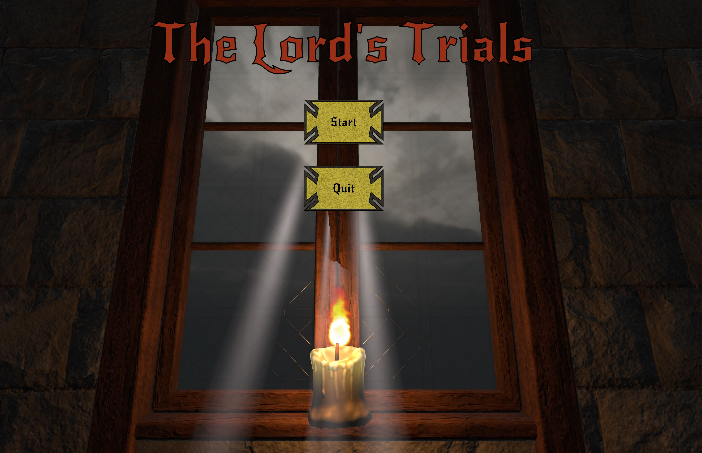
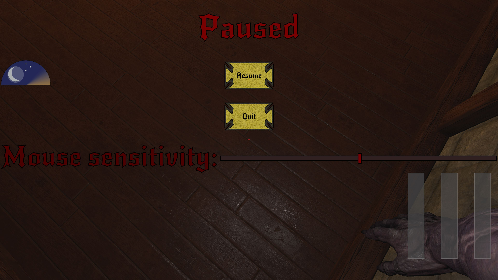
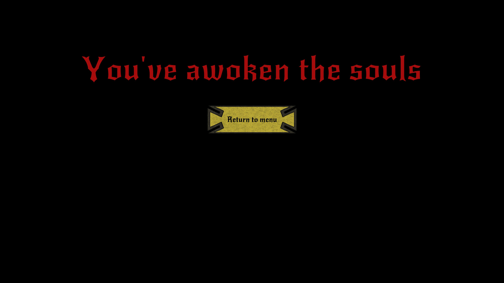
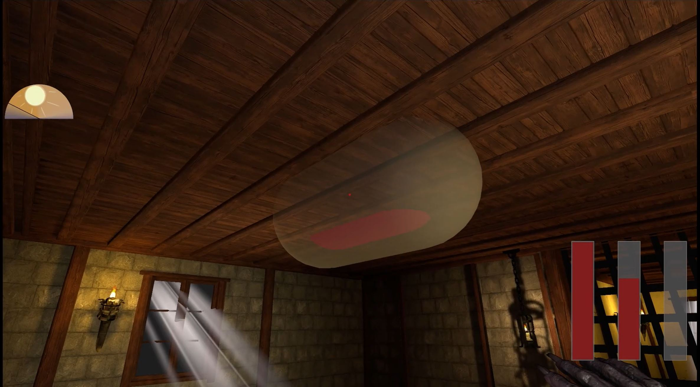
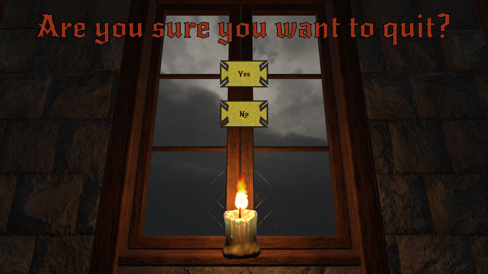

The Lord's Trials is an escape room style game created within the span of 3 weeks with a group of 2 members. It was a submission project for the Chicaghoul Game Jam of 2025, hosted by ICG and Night City.
Available on Itch.io.
Programmer & Game Designer
I was in charge of the project management, implementating functions and interactions, and UI elements.
Gameplay:
The theme for the game was haunted Castle, in which we had to incorporate two prompts. This game follows Dracula who was captured and weaken by The King in Yellow. Dracula must escape through the castle, but each room contains a puzzle. If he is able to solve them correctly, he will regain blood and unlock the door to venture forward. However, each room and overall game has a timer to complete. Depending on the amount of blood the player earns and the timer, will result on a specific ending.
I was in charge of working on the UI elements and HUBs to be displayed and updated within each scene. For the menus, I used the Unity UI Toolkit, in which created a UI Manager script to handle swapping to the correct menus. For each UI asset, there were custom scripts to handle the events and functions.
The only issue I had was displaying two UI assets at the same time. When using the UI Toolkit, only one UIDocument can display an asset. To solve this, inside the UI Manager script I called the specific gameobjects that holds their own UIDocument component to be activated/deactivated when it was called. This was able to work as intended, but if there were more screens needed, it would have needed to be implemented manually. If I was able to redo this, I would have had the UIDocument asset be added on top within the stack.
Start Menu: Title, Start Button, Quit Button
Pause Menu: Title, Resume Button, Quit Button, Mouse Sensitivity Slider
Ending Menu: Large text displaying result based on the ending, Return to home screen button
Gameplay Menu: A rotating clock of the sun and moon that acts as a timer, Three rectangle jars to hold blood supply
Quit Menu: A title asking if the user is sure they want to quit, Yes Button, No Button
